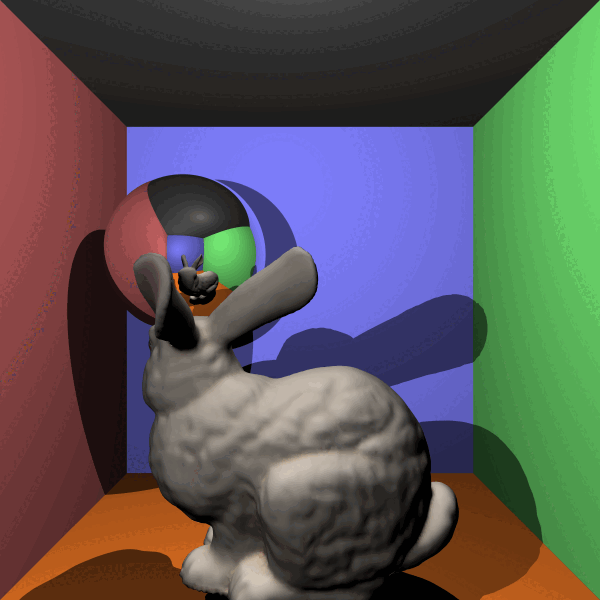
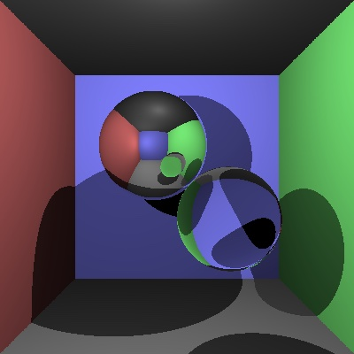
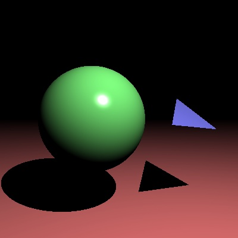

Ray Tracer
Graphics
A program that turns a 3D scene into a realistic image by simulating how rays of light travel and bounce, producing lighting, shadows and colour.
- Serves: anyone with a 3D scene
- Difficulty: Hard



Ingredients
 C#
C#
Method
- Set up the scene: a camera, a light and a handful of objects, each with its own colour.
- For every pixel in the image, fire one ray from the camera out through that pixel into the scene.
- Find the closest object each ray hits. If it hits nothing, colour the pixel with the background.
- At each hit point, fire a second ray towards the light. If something blocks it, the point sits in shadow; if not, brighten it based on how directly the light falls on it.
- Repeat for every pixel, then write the finished colours out to an image file. Leave it to render; larger images take longer to bake.
Chef's Notes
Start with a single sphere and one light before adding anything else. If the shadows come out speckled, nudge each shadow ray slightly off the surface before firing it, so it does not hit the point it started from. Rendering is slow, so test on a small image first.